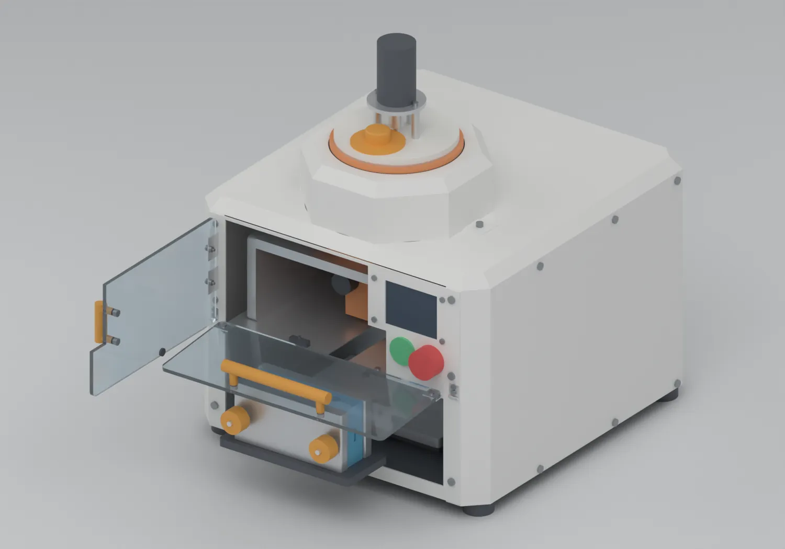
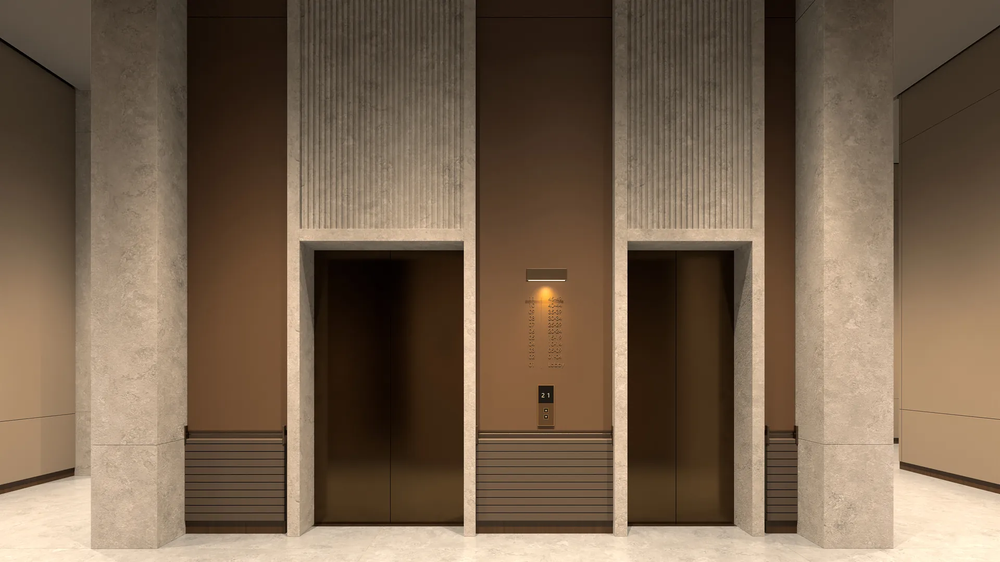

Независимый дизайнер и разработчик
Цифровой опыт,которыйчувствуют.
Создаю сайты, видео, 3D и инженерные проекты.
Соединяю дизайн, технологии и движение.
Идея. Форма. Движение.
Хорошие идеи заслуживают
сильного воплощения.
От первого эскиза до сайта, которым пользуются.
От раскадровки до истории, которую запоминают.
Помогаю вашему проекту обрести форму — и характер.
01 / Избранные проекты
У каждой задачи —
своя история.
Сайты, интерфейсы и продукты.
От идеи до работающего результата.
02 / Инженерия и оборудование
Механика, которую
можно покрутить.
Станки для производства Ankor.
Fusion 360, CadQuery, Blender — от эскиза до сборки.

Тяните — вращение · наведите на деталь — материал
Итерации блистерного станка
От 104 до 25 кг за четыре компоновки.
Первый блистер был шириной 936 мм и весил около 104 кг. Разбор компоновки убрал лишние секции: в V05 одна секция и формует карманы, и запаивает полосу.
03 / 3D, CGI и визуализация
Миры, которых
ещё нет.
Архитектура, VR, игровые персонажи и анимация.
Unreal Engine, Blender, Cinema 4D, ZBrush.

Потяните — 360°360° · Unreal Engine 5.8
Лобби SAF Avenue
Первый этаж жилого комплекса по дизайн-проекту: сцена собрана в Blender, передана через USD в Unreal Engine 5.8 и просчитана в path tracer. Восемь камер, панорамы и прогулочный режим.
04 / Идеи в движении
Истории, которые
оживают.
ZTK — опенер
Генеративное видео и монтаж под музыку, 2:56
Вертикальный формат
AI-фильмы и продуктовые ролики для соцсетей
YouTube-канал
Полные фильмы на канале
05 / Бренды и айдентика
Знаки, которые
узнают.
Логотипы, упаковка и визуальные системы —
от автофестивалей до производства.
06 / Презентации и концепции
Идеи, собранные
в историю.
Питчи и концепции: VR, фестивали,
производство, анимация. Откройте любую.
07 / Подход и возможности
Внимание
к деталям.
И к смыслу.
 Корней Колокольников
Корней КолокольниковДизайнер · Разработчик · Инженер · Автор видео
Я Корней Колокольников. Создаю сайты, цифровые продукты, видео и оборудование. Мне интересны и логика интерфейса, и механика станка, и образ, который остаётся в памяти.
В веб-проектах работаю с интерфейсами, каталогами и интерактивными решениями. В видео — с фильмами о брендах, CGI, AI-видео и анимацией логотипов. В инженерии — с моделями в Fusion 360 и CadQuery, сборками и документацией для производства.
Сайты и интерфейсы
Лендинги, корпоративные сайты и каталоги. Продуманная структура, адаптивная вёрстка и понятный путь к действию.
Инженерия и оборудование
Станки и оснастка: 3D-модели, сборки с проверкой крепежа и пересечений, рендеры, чертежи и технологические документы.
3D, CGI и VR
Архитектурная визуализация в Unreal Engine и Blender, VR-приложения, игровые персонажи и ассеты.
Видео и анимация
Фильмы о брендах и местах, компьютерная графика, AI-видео, анимация логотипов и панорамные визуалы для экранов.
Бренд и упаковка
Логотипы, айдентика, упаковка и этикетки, презентации для инвесторов и партнёров.
Цифровые продукты
Конфигураторы, панели управления и приложения. Интерфейсы, которые помогают решать конкретную задачу.
Путь
08 / Пространство для заказчиков
Ваш проект.
Уже в действии.
Открывайте сайты по своей ссылке. Изучайте работающий результат, проверяйте разные экраны и оставляйте комментарии.
Открыть демонстрации Ankor и «Леса-вышки» — прямо здесь, в портфолио
09 / Следующая история — ваша